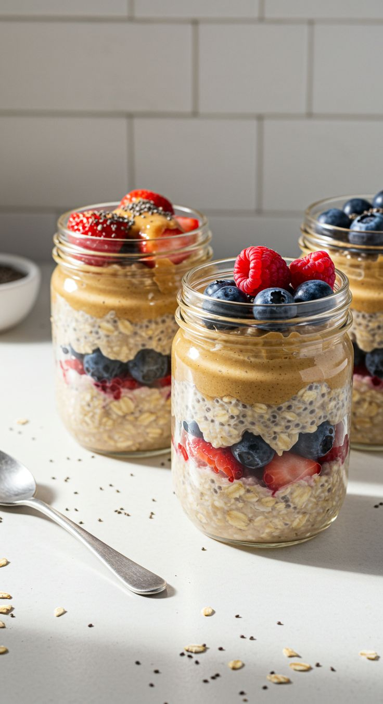

Overnight-oats
Home

Description
This recipe combines Greek yogurt, chia seeds, and oats for a filling and nutritious breakfast.
brunch, and even as a high-protein snack!
Ingredients:
- ½ cup quick or old fashioned oats, (such as Quaker Oats), uncooked
- ½ cup nonfat milk
- ½ cup nonfat plain Greek yogurt
- 1 teaspoon chia seeds (Optional)
- 1 cup fresh mixed berries and fruit
Steps:
- Add oats to the container of choice; pour in milk.
- Layer in Greek yogurt, chia seeds, and mixed berries and fruit.
- Refrigerate 8 hours to overnight.